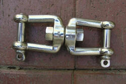
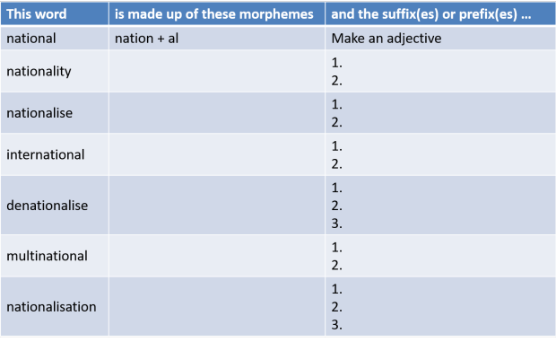

Word formation: the essentials

There is a more advanced guide to word formation in the in-service training area. You may like to go on to that after you have worked through this guide. There is also a guide to morphology which covers some key concepts but this does not assume you are familiar with it. Both those guides are linked in the table of related guides at the end of this.
English (like all languages) uses its existing resources to make new words. Here are just some of the most common ways it does it.
| What we do | For example | ||
| We use the same word but change its word
class and extend the meaning. This is called conversion. |
dry (adjective) stable (noun) |
⇒ | dry (verb) stable (verb) |
| The towel is dry so use that
to dry the dog. Please stable the horse in that stable over there. |
|||
| We add a bit to the
beginning of a word. The thing we add is a prefix and the process is called prefixation or prefixing. Suffixation and prefixation are together known as affixation. |
interested possible |
⇒ | uninterested impossible |
| There are some who are interested, some who are uninterested. | |||
| We add a bit to the end of
a word. The thing we add is a suffix and the process is called suffixation or suffixing. Suffixation and prefixation are together known as affixation. |
friend friendly |
⇒ | friendly friendliness |
| He sounds friendly enough but I don't think his friendliness is sincere. | |||
| We repeat the word or repeat it with a minor change. This is called reduplication. | tacky chat so |
⇒ | ticky-tacky chit-chat so-so |
| It's not only tacky; it's made out of ticky-tacky. | |||
| We combine two words to make a third meaning. This is called compounding and can be used to make nouns (commonly) or adjectives and verbs (less commonly). | cup + board ocean + going baby + sit |
⇒ | cupboard ocean-going babysitting |
| Originally a cupboard was a board on which cups were hung. | |||
| We shorten words. This is called clipping. Sometimes we insert the ' to show that a word has been clipped. Not all clipped words are informal (but that's the way to guess). | automobile telephone |
⇒ | auto 'phone |
| If you 'phone tonight, let it ring because I can't always hear the house telephone from the garden. | |||
| We combine two words to form a third. This is called blending and the word that results is a blend or portmanteau word. This is different from compounding because the words that make up the blend are often clipped in some way. | motor + hotel smog + fog breakfast + lunch |
⇒ | motel smog brunch |
| I was too busy for breakfast today and I can't have lunch so I'll get some brunch. | |||
Spelling is affected by many suffixes.
Now take this test to see if you can match the term for word
formation to the examples.
This guide concerns only the ways we use some basic prefixes and suffixes. At the end, there are links to areas for further study.
|  | Affixation: suffixation and prefixationbuilding new words |
Affixation is the most common (and most commonly taught) way of making new words in English.
-
The first thing to notice is that adding a prefix
usually changes the meaning of the word.
For example, if we add im to possible, we get its opposite meaning. If we add hyper to market, we get a whole new (but related) meaning. -
The second thing is that adding as suffix usually
doesn't change the meaning but it does change the word class.
For example, if we add -ness to hopeless we get the noun from the adjective, hopelessness. If we add -ly to topical we make the adverb from the adjective, topically.
That's not a hard rule because some prefixes can act to change
word class, for example:
devil → bedevil
changing a noun to a verb
and some suffixes can act to change meaning without affecting the
word class, for example:
hopeful→ hopeless
making the opposite meaning.
Affixes are referred to as morphemes and there are two sorts of these:
- Bound morphemes which cannot stand alone as independent
words, such as:
-ation
pre-
-itify
-en
dis-
etc. - Free morphemes which also have an independent existence in
the language such as:
-less
-able
super-
ex-
-ful (with a spelling change)
under-
etc.
Prefixesadding to the beginning |
There are lots of prefixes in English. These are their most common functions:
| Negative | Reversing an action | Time and ordering | Degree or size |
| un- in- im- ir- a- non- |
de- un- dis- |
fore- ex- pre- post- re- |
super- sub- under- over- out- |
|
Opposite, not or lacking in Mostly for adjectives such as amoral, incredible etc. |
These usually go with verbs such as disagree, undo, deforest etc. | re- and fore- prefix verbs such as redo, foretell etc. The others go with nouns mostly such as pre-war, ex-husband etc. | These are common in words such as superheavyweight, understate, overgeneralise etc. |
For a much longer list, see the in-service guide to this area, linked below.
Suffixesadding to the end |
As we noted above, these usually change word class while retaining the essential meaning of the root form. So friend changes to friend-ly but the sense remains. Here are some examples:
| Making nouns | Making verbs | Making adjectives | Making adverbs |
| employ-ee organis-ation boy-hood keep-er happi-ness ideal-ism/-ist manage-ment friend-ship |
democrat-ize simpli-fy deaf-en |
friend-ly music-al hero-ic attract-ive use-ful use-less drink-able hair-y |
happi-ly north-wards crab-wise |
Most suffixes
make nouns or adjectives with very few making new verbs or adverbs.
For a longer and more nearly complete list, see the in-service guide to
this area, linked below.
 |
Putting it together: a revision task |
Here's some revision and exemplification. Your task is to:
- Identify the affixes
- Say what they do
The first row is done as an example.
When you have made a few notes, click on the table for the answers.

By the way, the word multinational can be used as a noun but that is not the function of the -al morpheme. It makes an adjective and then the adjective is used as a noun (by a process we saw above below called conversion).
Now try this short test.
If you want to learn more about how other words are formed in English and more about the two areas above, try the in-service guide to word formation, linked below. There is also a link to the lexis index in this section of the site.
| Related guides | |
| compounding | for a more technical guide to this area |
| word formation | for the more technical, in-service guide to word formation |
| morphology | for more on how words are broken down and combined |
| lexis index | go here for more links to guides about words and vocabulary |